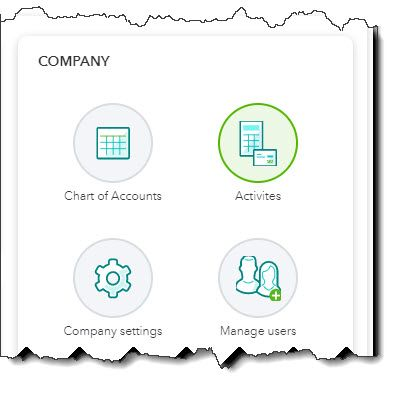

QuickBooks Online allows you to give multiple users access to your account. Here’s how to set them up.
Adding employees to your staff is reason to celebrate. It means you’re growing enough that you need to bring new people on board to get all of your work done.
Adding employees that need access to your QuickBooks Online data, though, requires a high level of trust. Those individuals will be able to see a lot of very sensitive company, customer, and vendor information. You need to make sure that they can only view what they need to and that their ability to enter and modify data is limited.
QuickBooks Online makes this possible with its user management tools. You can provide users with their own login information that restricts where they can go and what they can do. Here’s how it works.
Types of Users
Warning: Your QuickBooks Online subscription allows you to invite a specific number of employees, though you can add more. Ask us about this.
To set up a new user, click the gear icon in the upper right. Select Manage users under Your Company. Or click Get things done in the toolbar and select the Manage users icon in the Company box.
Click the Manage users icon to add a new user to your QuickBooks Online account.
You’ll see a table with your own account information listed there. Click Add user in the upper right. In the window that opens, you’ll have to choose a user type. This can be a:
Both of these user types would count toward your employee limit. You can also invite someone to have access to Reports only, excluding payroll and contact information (wouldn’t count toward your user limit).
Choose Standard user and select Next in the lower right. The page that opens asks you how much access the individual should have. Your options are:
QuickBooks Online shows you what specific users’ access rights are.
After you’ve made your selection on this page, click Next in the lower right. You’ll answer a few Yes, No, or View only questions, things like Do you want this user to add, edit, and remove users? Click Next and provide the user’s name and email address. He or she will receive an invitation (good for 30 days) to set up a password and log in. Click Save to be returned to your user access list. Your user can log in after accepting your invitation.
Other Ways to Keep Your Data Safe
Limiting access for other employees who must log into QuickBooks Online is one way of safeguarding your company file data. Here are some additional suggestions:
One serious security breach could shut you down. Follow these best practices to avoid hackers and other intrusions that could seriously compromise your data or put it in the wrong hands. Your customers, vendors, and employees entrust sensitive information that you’ve added to your QuickBooks company file. Continue to earn their trust by protecting their data as well as your own.
Questions about system security or about QuickBooks Online features? We’re here, and we stand ready to share our accounting expertise with you. We want to see you succeed, and good financial records are essential in making that happen.